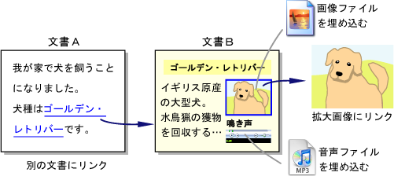
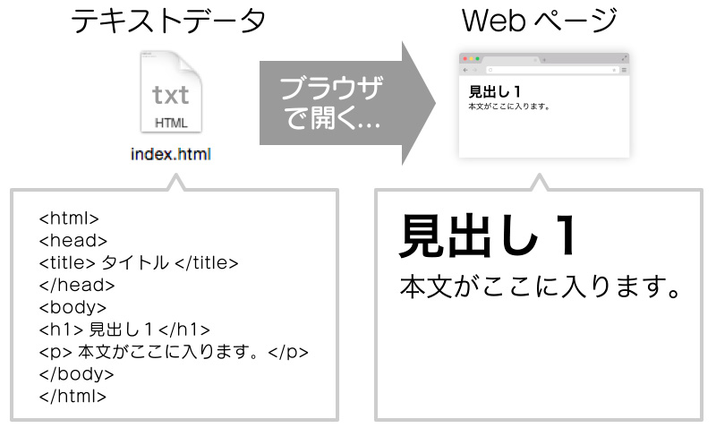

HTML（エイチティーエムエル）とは「Hyper Text Markup Language（ハイパーテキスト・マークアップ・ランゲージ）」の頭文字をとった略称です。
インターネット上で公開されてるウェブページのほとんどはHTMLで作成されていて、 ウェブサイトの基礎といえる言語です。
基本的に、文章は「タイトル」「見出し」「段落」などの要素から成立しています。
ハイパーリンクや画像等のマルチメディアを埋め込むハイパーテキストとしての機能、見出しや段落といったドキュメントの抽象構造、フォントや文字色の指定などの見た目の指定、などといった機能がある。
ハイパーテキストでは、ウェブページから別のウェブページにリンクをはったり、 ウェブページ内に画像・動画・音声などのデータファイルをリンクで埋め込むことができます。 HTMLには、このハイパーリンク機能で関連する情報同士を結びつけて、情報を整理するという特徴があります。
マークアップとは、文書の各部分が、どのような役割を持っているのかを示すということです。
例えば、見出し・段落・表・リストなど、文書の中で各部分が果たしている役割が分かるように目印をつけます。
こうした見出し・段落・表・リストなどの文書内の各部分を要素（element）と呼びます。
テキストエディタで文章を書いて、拡張子を「.html」にして保存すればhtmlファイルのできあがりです。

テキストエディタで下記の文章を書いてブラウザーで開けよう。
例：[sample0-1.html]
<html> <head> <title>タイトル</title> </head> <body> <h1>大見出し</h1> <h2>中見出し</h2> <p>本文です。</p> <img src="https://frame-illust.com/fi/wp-content/uploads/2017/03/9687.png"> </html>実行結果